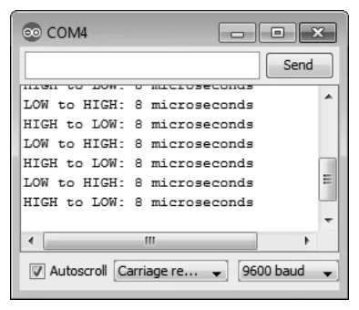

Each time the Arduino starts running a sketch, it also records the passage of time using milliseconds and microseconds. A millisecond is one thousandth of a second (0.001), and a microsecond is one millionth of a second (0.000001). You can use these values to measure the passage of time when running sketches.
The following functions will access the time values stored in an unsigned long variable:
unsigned long a,b;
a = micros();
b = millis();Due to the limitations of the unsigned long variable type, the value will reset to 0 after reaching 4,294,967,295, allowing for around 50 days of counting for millis() and 70 minutes in micros(). Furthermore, due to the limitations of the Arduino’s microprocessor, micros() values are always in multiples of four.
Let’s use these values to see how long it takes for the Arduino to turn a digital pin from LOW to HIGH and vice versa. To do this, we’ll read micros() before and after a digitalWrite() function, find the difference, and display it on the Serial Monitor. The only required hardware is your Arduino and cable.
Enter and upload the sketch shown in Listing 8-1.
// Listing 8-1
unsigned long start, finished, elapsed;
void setup()
{
Serial.begin(9600);
pinMode(3, OUTPUT);
digitalWrite(3, LOW);
}
void loop()
{
❶ start = micros();
digitalWrite(3, HIGH);
❷ finished = micros();
❸ elapsed = finished – start;
Serial.print("LOW to HIGH: ");
Serial.print(elapsed);
Serial.println(" microseconds");
delay(1000);
❹ start = micros();
digitalWrite(3, LOW);
finished = micros();
elapsed = finished - start;
Serial.print("HIGH to LOW: ");
Serial.print(elapsed);
Serial.println(" microseconds");
delay(1000);
}micros()The sketch takes readings of micros() before and after the digitalWrite(HIGH) functions at ❶ and ❷, and then it calculates the difference and displays it on the Serial Monitor at ❸. This is repeated for the opposite function at ❹.

Now open the Serial Monitor to view the results, shown in Figure 8-29.
Because the resolution is 4 microseconds, if the value is 8 microseconds, then we know that the duration is greater than 4 and less than or equal to 8.